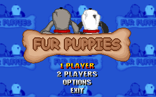
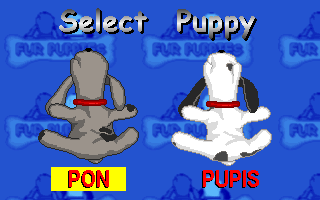
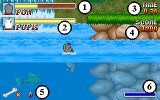
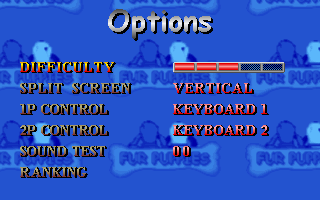

SYSTEM REQUIREMENTS
STORY LINE OF THE GAME
Pon and Pupis, two puppies bought by a family shortly after being born, are brutally abandoned. Alone and lost in the middle of the city, they only have each other for survival in a world that rejects them. Together they must find enough courage to undertake the long journey that is to take them again to their true home.
Help them in the long path that awaits them and give them back the joy that men's cruelty took from them.
RULES OF THE GAME
The aim of the game is to ensure that the two puppies get to the end of their path. To do this, they have to get past six different levels each of which are divided into several sections.
Along the path you will meet obstacles and enemies that your puppies will have to confront.
Can be played by one or two players.
THE GAME FOR ONE PLAYER
If you play alone, the game allows you to choose which of the two puppies to start the match with, but in reality you are controlling both of them, you are only choosing which one to start off with.
As the enemies or obstacles in the levels harm the puppy, he will keep losing life and when his life indicator comes to the end, your puppy will no longer be able to continue and the other will take his place. When the other cannot continue either, you will have lost.
However, all through the game various items will appear that can increase the puppies' life force. The fun is in the fact that if you take one of these items when the life force bar of the puppy you are controlling is full, these items will boost the energy of the other puppy.
In this way, you can enable a puppy that was not able to continue to get better and it can continue the game further on.
In the game are aquatic zones that you can dive into. You can come up to the water's surface and swim for it or dive below the water level. If you do the latter, a bar of air will go on steadily emptying and when this comes to an end your puppy will lose all his energy. If you go up to the surface before this happens the bar of air will go on steadily filling up.
THE GAME FOR TWO PLAYERS
When there are two players playing each one controls one of the two puppies. Player 1 chooses the one he wants at the beginning of the game and player two will control the other.
Both play at the same time with a split screen. Each half-screen follows one of the puppies.
In this way, the game becomes more co-operative, as the puppies can help each other to overcome the toughest enemies. Although each one can go on its own.
In any case, a phase is successfully completed when one of the puppies gets to the end of that same phase.
Here also, the surplus energy goes from one puppy to the other and if one of the two ends up without energy the player who controls it will have to wait for the other to give him a little to be able to continue in the game.
On ending a phase, the puppies share out the energy to start the following one under the same conditions.
HOW TO PLAY
The game is controlled by the use of 6 buttons: On starting off the game and after the presentation screens the title screen will come up. If you press one of the buttons, the main menu will appear to you. If on the contrary, you wait a moment without pressing any button the game demonstration mode will start, which you can interrupt at any moment by pressing a button.

Left, Right, Up, Down, Button1 and Button2.
Consult the paragraph Option Screen to see the configuration of the keys on the keyboard or the buttons on the Joystick, which correspond to each function of the game.
CONTROL IN THE MENUS
MAIN SCREEN
When either the one player mode or the two-player one is started up, the puppy selection screen will appear.
If a single player is playing, they select the puppy with which they wish to start to play.
If two people are playing, it is player 1 who selects the puppy he wishes. The other one will be for player 2.

Now you are ready to play. It is time to see how the two puppies are controlled:
These are the functions of the six buttons that will control the game:
To destroy an enemy you can jump on top of him, but bear in mind that some enemies cannot be destroyed and that you cannot jump in the water.
You can look around even while you are running and your puppy will keep on running. If your puppy is at a standstill when you look around he will stay at a standstill. In the water you cannot look around.
In order to pick up the objects that appear throughout the game simply go in front of them.
In order to pause the game press on the ESC key. The PAUSE square will come up. If you select: CONTINUE you will return to the game. If you select EXIT the match will come to a finish.
Whether you are playing the screens will show you important information you need to succeed:

OPTION SCREEN
From this screen you can change some aspects of the game. Use the cursors to move between the options and change them. Press ESC or Button2 to exit.

The options are:
This shows you the keys that correspond to each function of the game in each one of the 2 configurations of the keyboard.
In the menus, you can move around using player 1's controller. But what is more, independently of what that may be, you can always use the configuration of keyboard 1.
THE LEVELS
These are the six levels that separate the puppies from the valley where their family is:
The beginning of the path is a calm and pleasant level. Wild flowers, farms and wheat fields welcome you to the adventure. But, do not be too trustful and come down from the clouds, because the first difficulties are already starting to crop up.
After the countryside a leafy forest awaits you full of enemies and tricky obstacles. You have to clamber up the highest trees, swim through rivers full of fish and go up to the tops of the rocks.
Does it seem difficult? Then what will you say when you have to do it in a heavy rainstorm!
An arid area where only cacti grow will surprise you with its caves of underground water. But not only water, as you descend through the caverns you will come across authentic rivers of lava.
You will need great skill to come out alive from these caverns that will make you believe for a moment that you have come to the actual core of the earth.
The time has come to relax and have an enjoyable swim in a beautiful deep lake. Relax? The mysteries that are hidden in these waters will not leave you with a moment to take a breath!
The end is drawing close. At least it should be close, but you find yourself in a dark unknown area. Show your courage and enter the castle. You will find traps of every kind and... Are they visions or did I see a ghost?
Here you have it. Behind this enormous mountain is the longed-for valley.
The magic of the snow and the feeling of being so close to your home will give you a surge of courage. And believe me you will need it because things are going to get hard. Enormous snowballs, rivers of icy water and a blizzard that gets stronger by the minute will invite you to give up.
Come on! One last effort!
THE ENEMIES
These are the animals that will see to it that things get difficult for you:
Hedgehogs
They go their own way and often in groups. They are not dangerous, unless they get very close because at the slightest contact they will hurt you badly. And there is no way to attack them.
Snakes
Watch out for these snakes, because they are very aggressive and if you get within their reach they will attack. Although, if you tread carefully they should not pose any problem.
Birds
Extremely dangerous, these birds will chase you wherever you go and it will cost you a great deal to get rid of them, but above all make sure they do not get you cornered against some object.
Mosquitoes
You will find them near water. They react upon sensing your body heat and can make it difficult for you to progress, but they cannot cause you too many problems.
Fish
Nice little fish that follow you on your way without paying any attention to you. Although you're limited manoeuvrability in the water may give you a fright if you get in their way.
Bats
With a similar behaviour to the mosquitoes, these nasty animals will make things difficult for you because they fly at a greater height and with an irregular movement.
Hares
You will find them in the high mountain. Draw close to them with great caution and watch out for their disconcerting jumps.
Ghosts
Levitating in the halls of the castle you will find these curious ghosts going back and forth. The best thing is to avoid them because their size makes it difficult to destroy them.
CREDITS
Program, graphics and levels design: Albert R. Farràs
Music: Stratos resources
Published by: Besuau S.L.U.